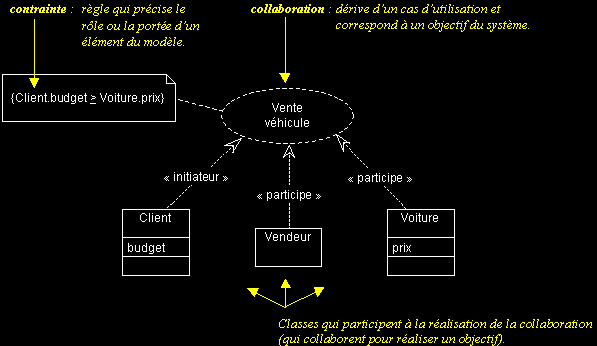

|
|
|
Les vues statiques d'UML (suite...)
LA COLLABORATION
q
Symbole de modélisation "collaboration"
- Les collaborations sont des interactions entre objets, dont le but est de réaliser un objectif du système (c'est-à-dire aussi de répondre à un besoin d'un utilisateur).
- L'élément de modélisation UML "collaboration", représente les classes qui participent à la réalisation d'un cas d'utilisation.
Attention : ne confondez pas l'élément de modélisation "collaboration" avec le diagramme de collaboration, qui représente des interactions entre instances de classes.

INSTANCES ET DIAGRAMME D'OBJETS
|
|
|